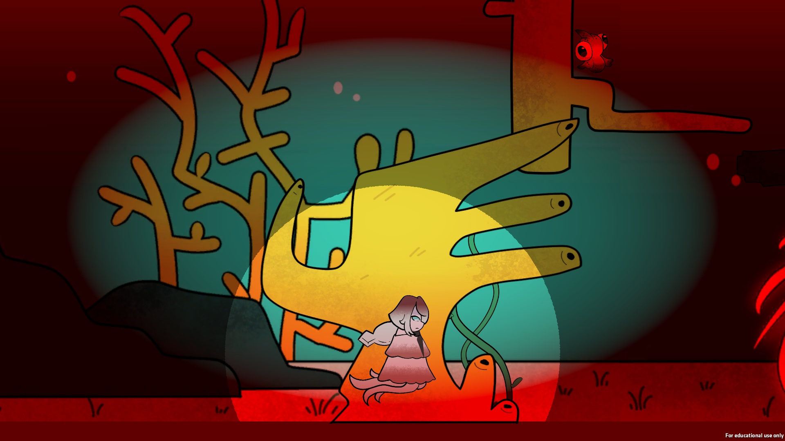
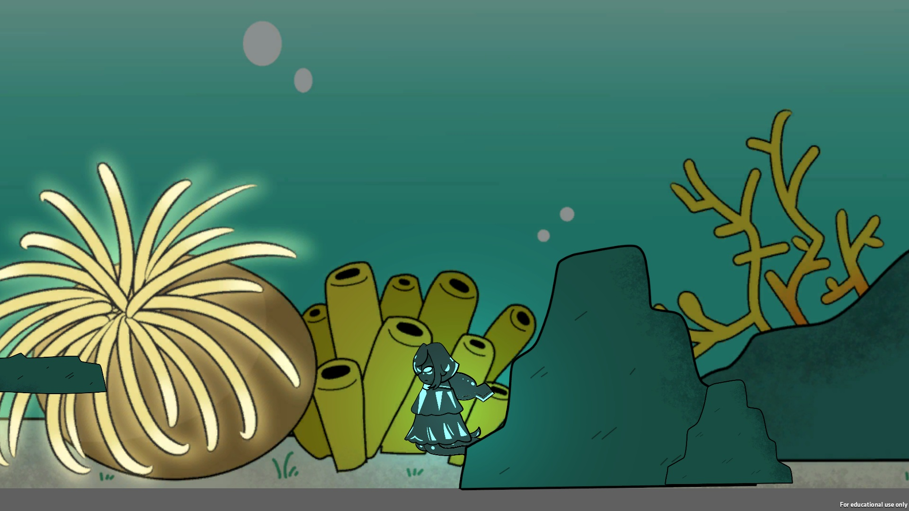
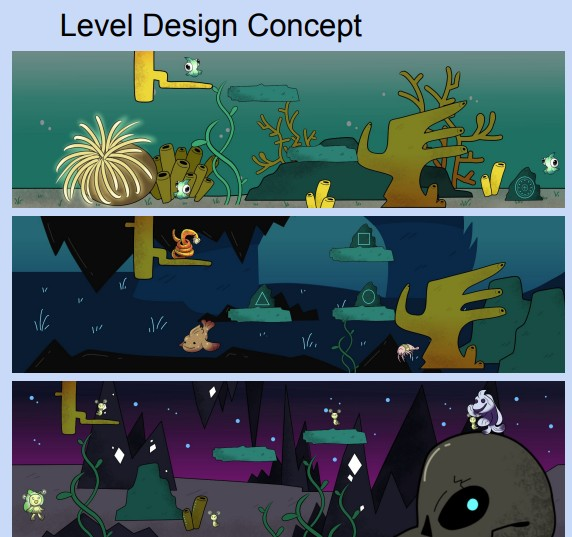
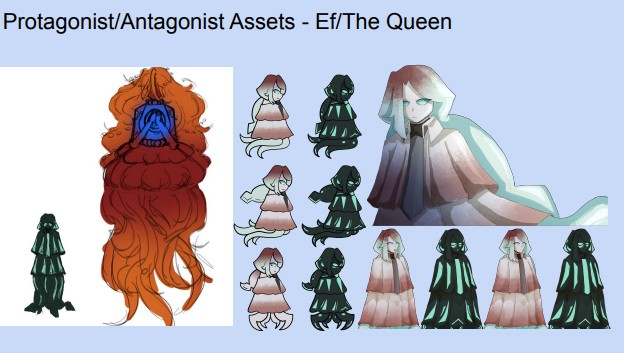
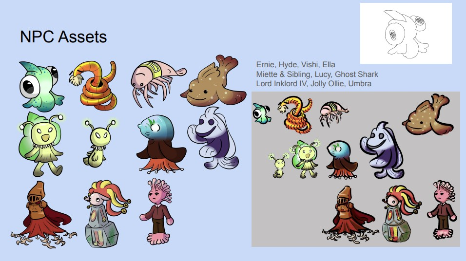

Abyssal Heart


Role: Programmer and Project Coordinator
Tech: C#, Unity, GitHub
Award: Best Art - GDS Welcome Jam 2025
Abyssal Heart is an atmospheric underwater puzzle-platformer where players use bioluminescence to navigate the lightless depths of the ocean. As Programmer and Team Coordinator, I oversaw a cross-disciplinary team of five to deliver a polished proof-of-concept within a strict game jam window. Developed in C# and Unity, my primary focus was the engineering of the core light-switching mechanic and ensuring a stable, functional platforming experience. During development, I acted as the primary "Scope Manager." To ensure a high-quality final build, I made the strategic decision to pivot away from non-essential systems—such as a complex particle system and dialogue tree—to focus on core loop stability and UX. This allowed me to deliver a fully functional game flow, including a robust state-management system for the title screen, game initialization, and exit routines.
The Technical Challenge
The core challenge was implementing a Global State-Switching Mechanic within 24-hours. The team engineered an event-driven system where the light switch (bioluminescence) state changes across the environment. Sanity Mechanic: As the player loses sanity, environmental objects shift—friendly NPCs can become aggressive and controls become more challenging to simulate deep-sea swimming in a panic induced state simular to "the bends" you would get from scuba diving. The Team made use of Trello and Mira for Project Planning and Brainstorming ideas.
 The original plan was to have the player navigate three stages each with their own puzzle and would get darker the further into the cave the player got. A dialog system is still in the process of being implemented as part of a future update planned to be released. This would involve moral choices that could further influence the environment: you may wish to for example trick an npc to give you an item or choose to be honest and therefore carry out a favour for the npc. Choices could therefore disrupt the ecosystem or block passages otherwise accessible - this would give the player the feeling that their choices matter during the Game but not in such a way that their choice would stop progress rather this may merely inconvenience/help them. This dialog system would explore the interactions the player could have and further improve the playability of the game.
Project Synopsis
After being exiled by the Queen, a lost knight finds themselves on a quest to retrieve the artifact that caused this spiral to begin with. Using bioluminescence, switch between the light and the dark to solve puzzles, interact with NPCS, and reach the deepest trenches of the ocean.
Character Design
Within this game, we play as a character named Firefly (Ef), who is based on a Firefly Squid. Every character is based on different sea creatures, mixing humanoid elements with those of said creatures.
Various aquatic life animals and plants were considered as part of this world's environment - some ideas just so happened to coincide with what aspects which can be seen in nature. The ideas brainstormed by the group were aspects we'd expect to see underwater: corals were our main influence as well as underwater cave systems, from what the group could observe the deeper into caves you go you generally see things such as dead animals or dark enclosed spaces. The final area of the game would therefore involve a dark cave system with stalactites that may contain gemstones so as not to look too dull for the player. The final room would be a boss area where the player comes face to face with the queen.
Technical Post-Mortem
The Project itself was considered a success in that, we had a working game within the time allocated, the concept was interesting and showed a lot of future potential if more time was spent on the development of the game itself. Sadly due to the lack of time allocated by the GameJam the group had to submit what they had even though we all seemed very keen to continue development at that time. The group dynamic worked well despite setbacks because everyone had a set task and we would all communicate with one another to figure out what ideas worked and which ideas should be considered in future development for the game.
Challenge: Naming Convention ConflictsOne of the greatest obstacles the game had in development were the naming schemes the designers had chosen, this caused a setback that slowed the depository gathering down we all soon decided on a uniformed folder structure Despite the folder structure however, this did not effect the performance of the game but rather just made implementing game mechanics a little difficult.
Future development: Dialogue SystemPost-jam, I am currently iterating on a Modular Dialogue System and custom Particle Effects to enhance the game’s narrative depth and atmospheric polish. Building on the initial proof-of-concept, I am focusing on the following enhancements:
- Atmospheric Lighting: Expanding the environment with dynamic rays of light and bioluminescent monster logic to heighten the "Abyssal" feel.
- Advanced Physics and Animation: Implementing floating buoyancy animations and water particle physics (such as procedural rising bubbles) to improve player immersion. Future development will focus on a Final Boss (Bullet Hell stage) and improved narrative cutscenes.
- UI Concept: Below is the layout for the upcoming User Interface, designed to provide a minimalist overlay that keeps the player's focus on the atmospheric environment.